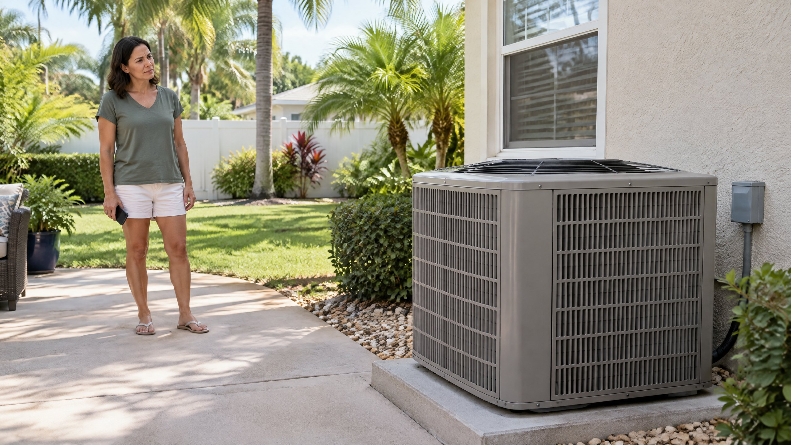

What Does a Rattle Tell You—and What Does It Not?
A rattle is a repeated shaking, tapping, or clattering sound. The useful clue is that something sounds different from the equipment's familiar operation. It does not identify the failed part. A recording of a metallic sound cannot establish whether the problem is a loose component, a moving assembly, or the way the unit is supported.
Trane lists several possibilities for abnormal rattling: a fan, fan motor, compressor, loose screw or bolt allowing an internal component to move, or an uneven outdoor unit. Its broader HVAC list also includes an indoor blower wheel, which is a different location. These are assessment possibilities, not interchangeable diagnoses for every outdoor rattle. [1]
For a Tampa homeowner, the decision is whether this is a new mechanical symptom needing an AC repair assessment, not which replacement part to order from a sound description. Tell the provider where you hear it and whether cooling or operation changed at the same time.
When Should You Turn Cooling Off?
If a normally quiet unit suddenly makes a loud rattle, shakes unusually, or develops scraping or banging, turn the cooling request off at the thermostat and arrange service. Do not keep cycling it to see whether it settles down. Trane recommends shutting the system off and requesting repair when normally quiet equipment suddenly becomes loud. [1]
A burning electrical smell, visible damage, or repeated breaker trips makes this more than a sound question. Do not touch the cabinet or open the electrical compartment. Follow emergency guidance if there is smoke or fire; an HVAC appointment is not a substitute for emergency response. Our AC breaker-trip article explains why repeated resets are not a repair.
Turning the thermostat off is an operating request, not proof that electrical parts are isolated. Leave panel removal, electrical isolation, internal fasteners, and rotating assemblies to a professional. Do not hold a panel down, push the fan, or reach through the grille while investigating.
Which Observations Help Without Touching the Unit?
You do not need to make the noise happen again for a useful service request. Describe what you already heard from your normal position. If you already have a short recording, share it along with the timing; the recording is supporting information, not a remote diagnosis.
| Observation | Useful detail | What not to conclude |
|---|---|---|
| Location | Outdoor cabinet, nearby wall, or mainly indoors | Every sound heard outdoors comes from the same component |
| Timing | Startup, throughout operation, or shutdown | A brief sound proves the unit needs no assessment |
| Change | New, louder, or different from usual | Age alone explains the noise |
| Other symptoms | Lost cooling, unusual vibration, or breaker trip | One symptom identifies a replacement part |
Note whether work was recently performed nearby or the symptom followed a weather event. That history helps direct inspection without proving the cause. Do not move the unit, add shims, retighten internal hardware, or remove objects through the grille to test a theory.
Could It Be a Loose Part Rather Than a Failed Motor?
Possibly, but the distinction needs inspection. Trane's rattling guidance includes loose hardware allowing an internal component to move alongside fan, motor, compressor, and support-related possibilities. A small-looking fastening problem and a damaged moving assembly can both sound mechanical to someone listening outside. [1]
Carrier identifies rattling and other mechanical noises as reasons to seek professional care for fan or compressor concerns. Its guidance does not make sound alone a component test. [2] If an assessment establishes a fan problem, discuss the specific condenser fan motor repair scope. Do not assume every rattle requires that service.
Ask the technician to explain the identified source and evidence before authorizing parts. “It rattles” describes your complaint. A diagnosis should explain what is moving or malfunctioning, how that was established, and why the proposed work addresses it.
What If the Rattle Happens Only at Startup?
Some equipment has characteristic startup or shutdown sounds. Trane emphasizes changes in those sounds and distinguishes normal equipment behavior from newly loud operation. [1] Model instructions and the unit's history matter; a sound being brief does not automatically make it normal.
Report whether the sound is new and whether it occurs at every start. Do not deliberately restart the equipment repeatedly for comparison. A technician can evaluate the starting sequence and actual components under controlled conditions.
If the unit is humming and its outdoor fan does not spin, that is a separate symptom. Read outdoor fan humming but not spinning rather than treating a hum, click, and rattle as the same diagnosis. For a control click, our AC contactor explanation describes why an audible switch does not confirm normal operation.
What Should the Assessment and Follow-Up Establish?
A useful visit should locate the sound, assess related movement and operating symptoms, and distinguish the cause from the place where noise is heard. Carrier describes repair as diagnosis, agreed component work, and performance testing. [2] Ask what was found, what is included, and how the result will be checked.
Verification should include the relevant operating sequence, not just a photograph of a replaced part. ENERGY STAR's professional checklist includes checking that equipment starts, operates, and shuts off properly, along with electrical connections and motor readings. Those checks support professional evaluation; they are not instructions for a homeowner to probe wiring. [3]
For an ongoing care plan, ask about AC maintenance and your model's requirements. Maintenance can include checks of moving parts and controls, but it does not guarantee a rattle will never return or replace diagnosis of a new symptom.
Frequently Asked Questions
Does a rattling outdoor AC always need a new compressor?
No. Rattling can involve several components or the unit's support. The sound alone does not establish a failed compressor. Ask for the identified source and diagnostic evidence before approving a component replacement.
Can I keep running the AC if it still cools while rattling?
Cooling does not establish that an abnormal mechanical sound can be ignored. If the rattle is suddenly loud, accompanied by unusual shaking, or includes scraping or banging, turn cooling off at the thermostat and request assessment rather than repeated test runs.
Should I tighten the outdoor cabinet screws myself?
Do not treat screw-tightening as a diagnosis or open the cabinet to investigate. Thermostat-off does not establish electrical isolation. A professional should identify the actual loose or moving component and determine the required work.
Can a phone recording identify the failed AC part?
A recording can help show the timing and type of sound, but it cannot verify the failed part. Share an existing recording and any related cooling or operating changes; do not restart damaged-sounding equipment to create one.
Sources
- Trane: Is This Normal? HVAC Smells and Sounds, Explained — abnormal rattling, vibration, possible sources, changed startup sounds, and professional assessment.
- Carrier: Air Conditioner Repair Guide — mechanical-noise concerns and diagnosis, agreed work, and performance testing; no quoted prices or repair-time promises used.
- ENERGY STAR: Maintenance Checklist — professional control, connection, motor, and operating-sequence checks.
Editorial Source Review & Publisher
Published by On The Way Heating & Air for Tampa and North Tampa homeowners using the manufacturer and federal references above. This is a general symptom explanation, not a component diagnosis, permission to operate damaged equipment, or a repair procedure. Follow model instructions and professional assessment of the actual system.